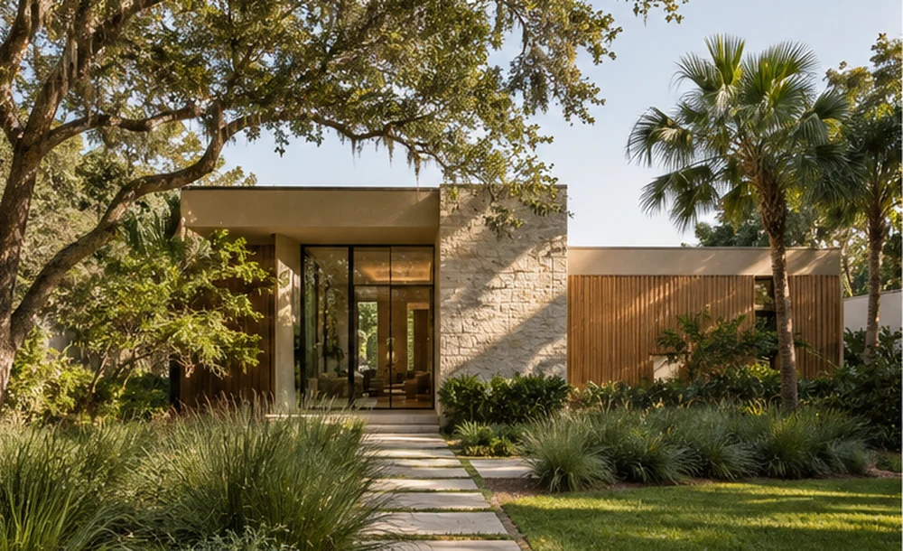
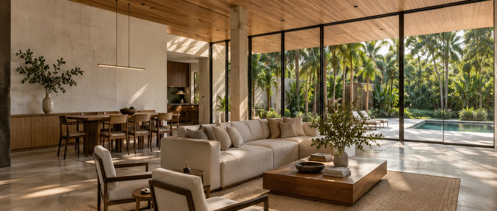
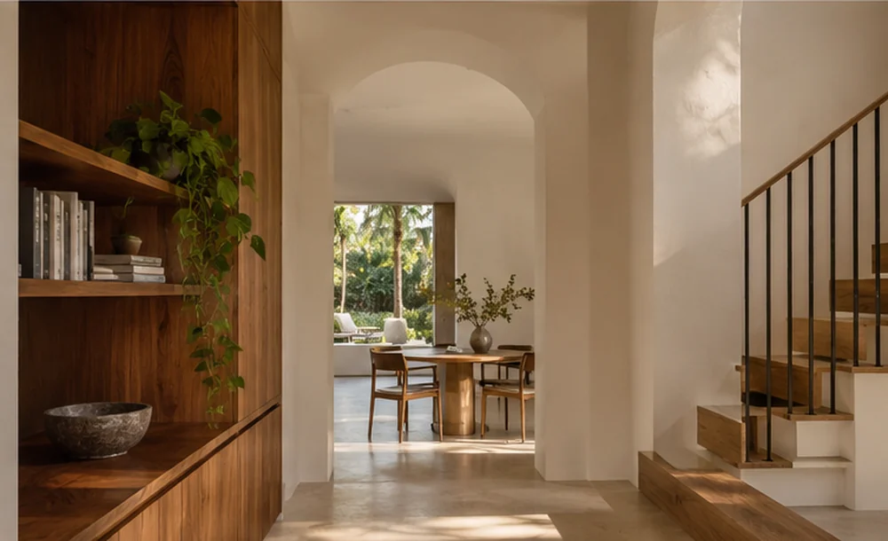

Skip to content
Charge-On
Construction
Work
Ethos
Practice
Charge-On
Construction
×
Work
Ethos
Practice
Scope List
Project Inquiry
Orlando · Winter Park · Sanford
Work
Featured
Scope List

Commercial interiors
Scope of work

Custom-home interiors
Scope of work

Renovations & remodeling
Scope of work
Repairs & finishing
Scope of work